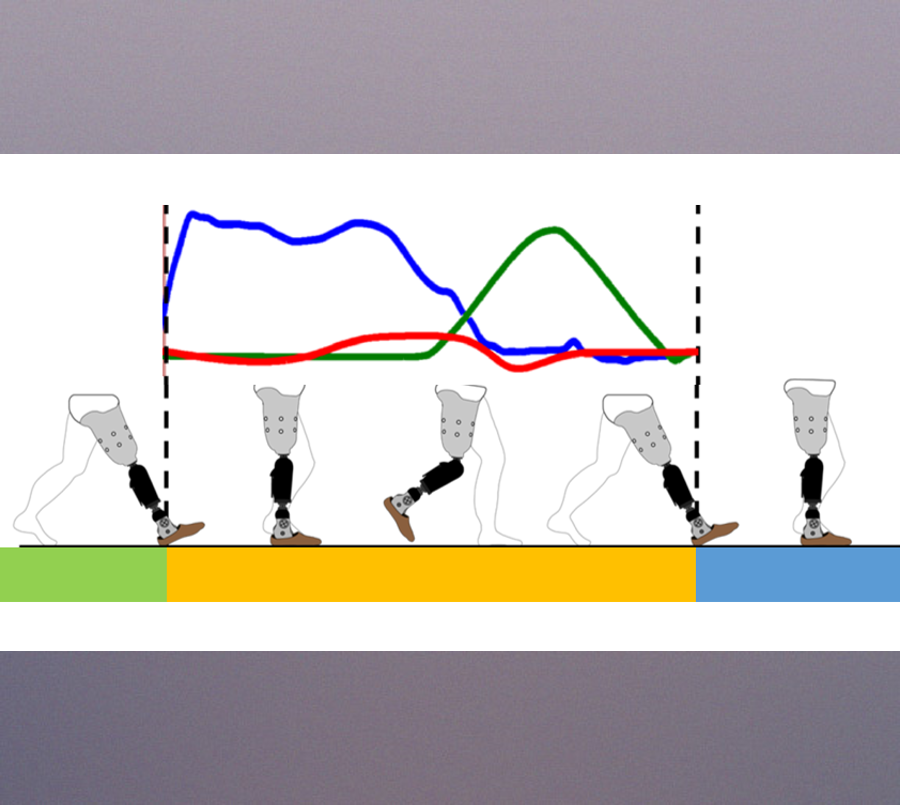
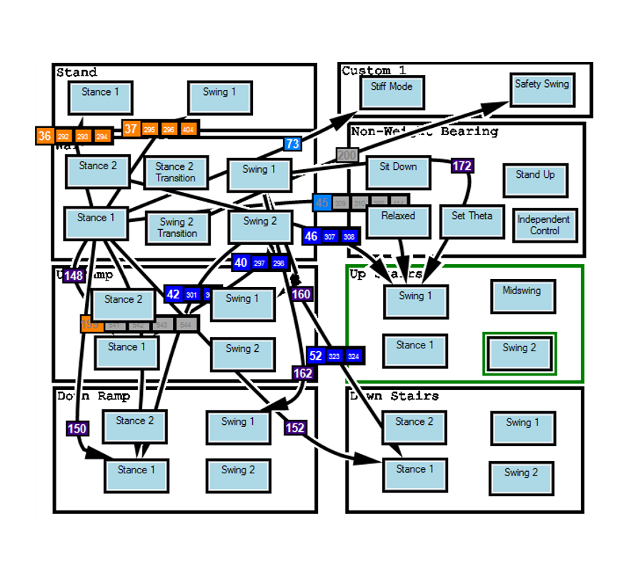
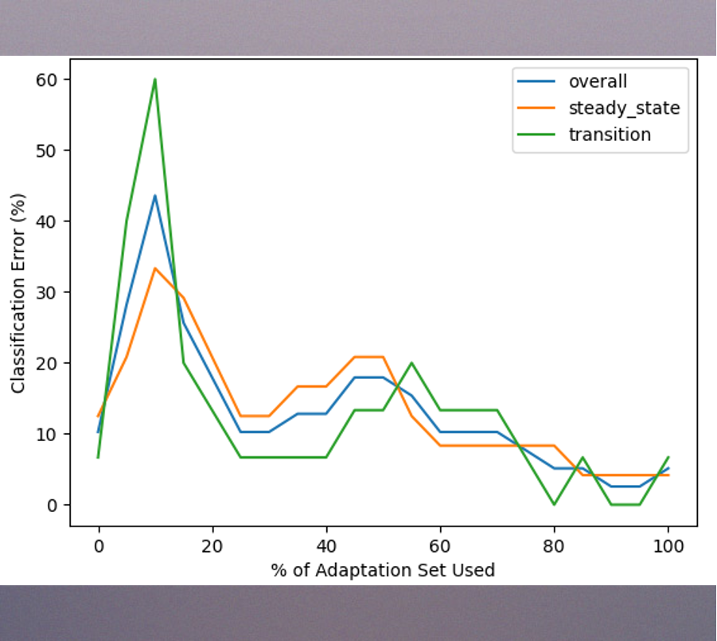

An overview of the classifier system I developed
at the
Center for Bionic Medicine
Overview
Amputees using a powered prosthetic leg need a safe, automatic, and seamless
system to transition between ambulation modes
(e.g. level-ground walking, stair ascent, ramp descent, etc.)
by recognizing the user's intent in real time.
Over the course of this project, I produced 3 modular Python packages and an
analysis toolkit to perform data processing on raw ambulation data,
model training, and real-time classification. Additionally, I delivered an
adaptive prosthetic control algorithm, reducing the training data required for
the baseline model by 20% through integration of patient ambulation data as they
walked.
The intent recognition system can be seen in action in the video below:

Data Collection/Processing
I wrote a Python script to process real-time and extract features from
on-board sensors including a load cell and accelerometer. We recorded
participants completing activities such as standing, shuffling,
walking, and navigating stairs and ramps. Additionally, I developed an
Android application to manually transition the leg and label the
ambulation mode during data collection.
I then wrote a Python package to process the and organize the recorded
sensor data, extracted features, and metadata into CSV files ensuring
portability and backwards compatibility.

Model Training and Real-Time Classification
I used dimensionality reduction techniques like PCA and ULDA on the
extracted features and used them to train a set of linear classifiers
to predict ambulation mode transitions.
The trained models were deployed on an embedded Linux controller in the
prosthetic leg. A finite state machine runs on the leg to define
parameters throughout the gait cycle for each mode, like stiffness,
damping, etc. However, transitions between modes rely on manual
transitions or the predicted transitions from the intent recognition
system.
The script which extracted features in real-time checks the current
state in the state machine and uses incoming data and trained models
to predict the next ambulation mode.

Adaptation
I also implemented an adaptive algorithm that updated the classifier models after each stride, tailoring predictions to the current user’s walking patterns. Starting with general models trained on multiple users, the system personalized itself over time, improving performance and reducing the amount of training data we needed to collect prior to an experiment.

{kind=link}
{kind=link}
{kind=link}